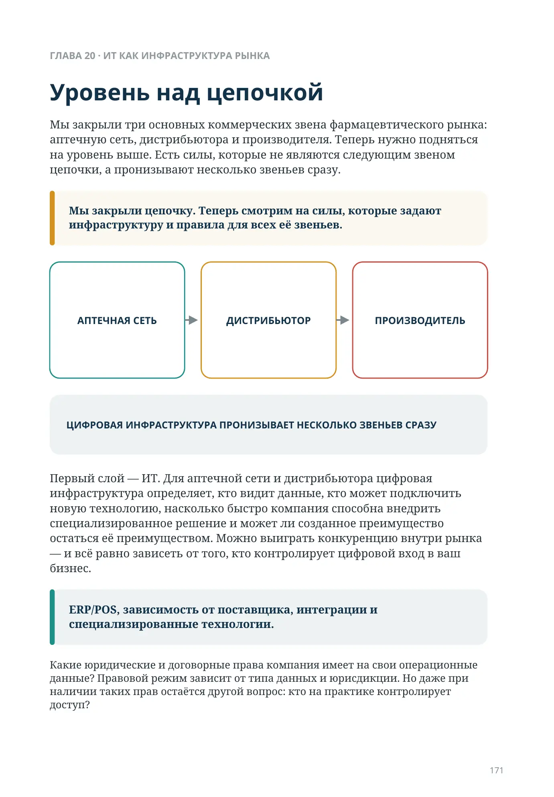
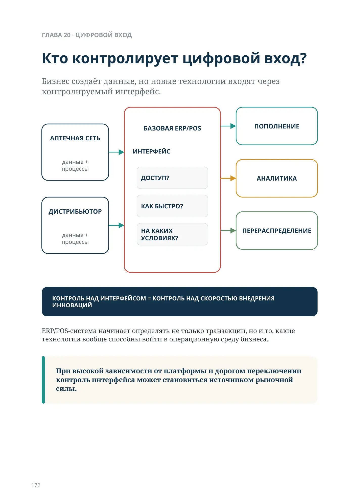
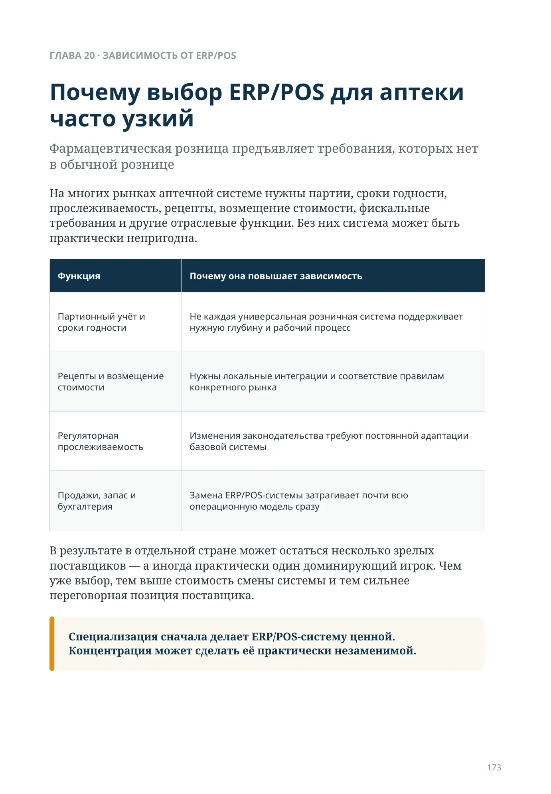
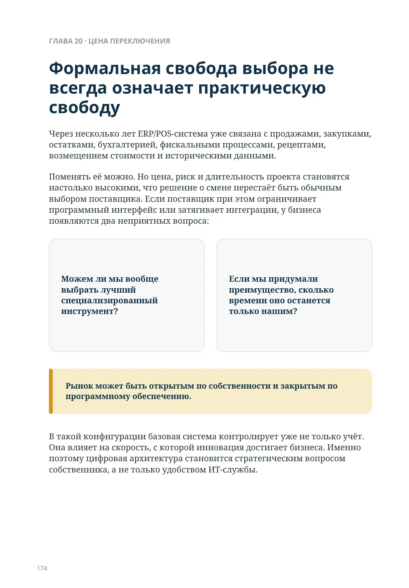
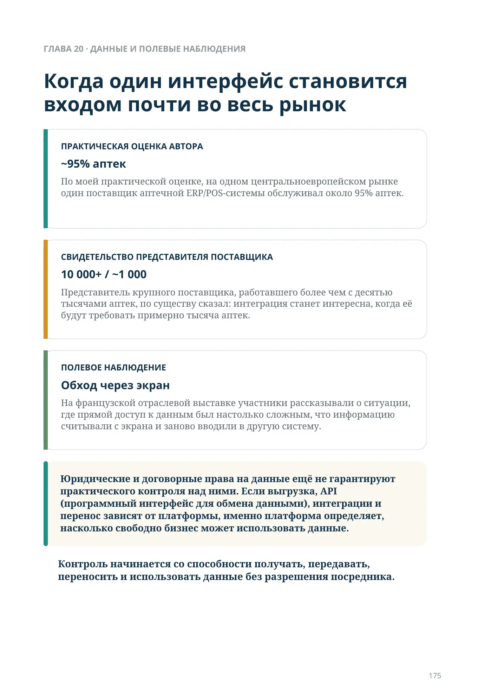
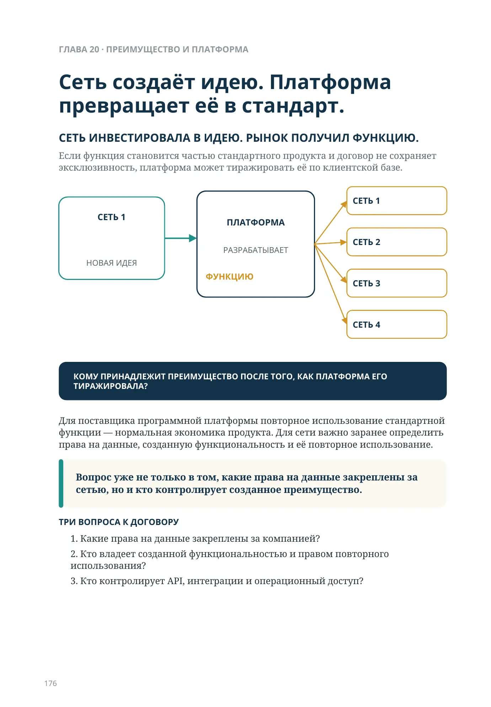
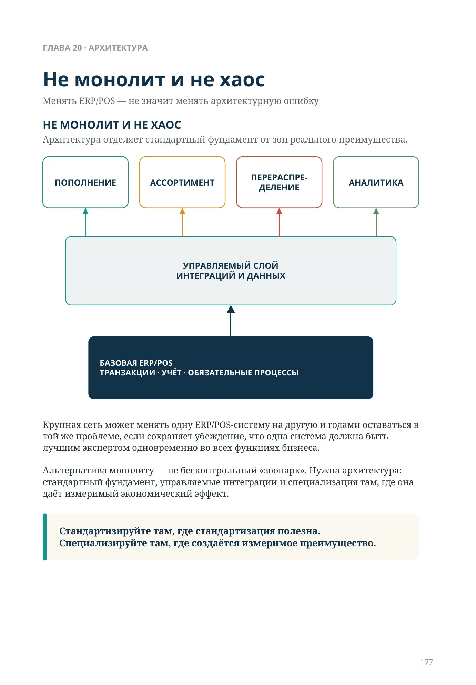
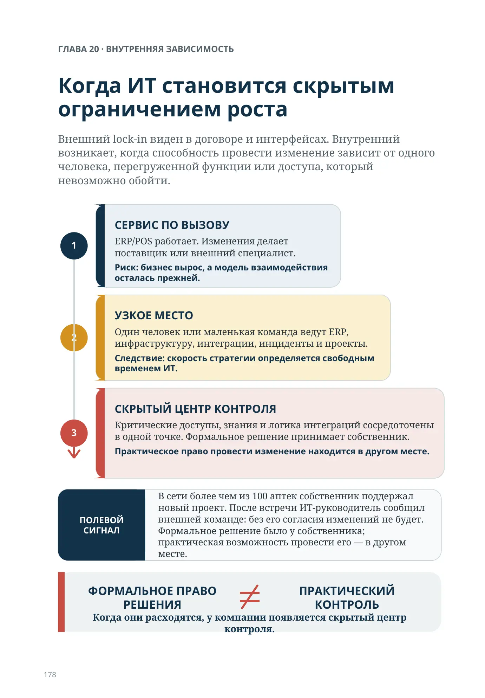
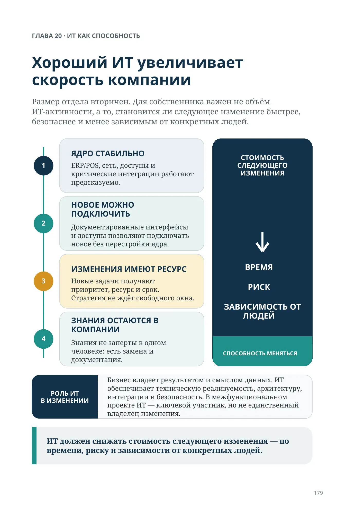
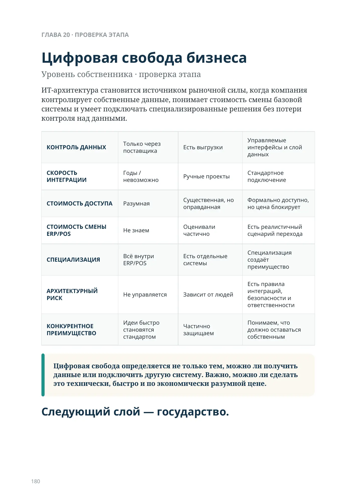

Кто контролирует цифровой вход?
Уровень над цепочкой
Глава 20 · ИТ как инфраструктура рынка
Мы закрыли три основных коммерческих звена фармацевтического рынка: аптечную сеть, дистрибьютора и производителя. Теперь нужно подняться на уровень выше. Есть силы, которые не являются следующим звеном цепочки, а пронизывают несколько звеньев сразу.
Мы закрыли цепочку. Теперь смотрим на силы, которые задают инфраструктуру и правила для всех её звеньев.
Первый слой — ИТ. Для аптечной сети и дистрибьютора цифровая инфраструктура определяет, кто видит данные, кто может подключить новую технологию, насколько быстро компания способна внедрить специализированное решение и может ли созданное преимущество остаться её преимуществом. Можно выиграть конкуренцию внутри рынка — и всё равно зависеть от того, кто контролирует цифровой вход в ваш бизнес.
ГЛАВА 20
ERP/POS, зависимость от поставщика, интеграции и специализированные технологии.
Какие юридические и договорные права компания имеет на свои операционные данные? Правовой режим зависит от типа данных и юрисдикции. Но даже при наличии таких прав остаётся другой вопрос: кто на практике контролирует доступ?
Кто контролирует цифровой вход?
ERP/POS-система начинает определять не только транзакции, но и то, какие технологии вообще способны войти в операционную среду бизнеса.
При высокой зависимости от платформы и дорогом переключении контроль интерфейса может становиться источником рыночной силы.
Бизнес создаёт данные, но новые технологии входят через контролируемый интерфейс.
данные + процессы
- Доступ?
- Как быстро?
- На каких условиях?
- Пополнение
- Аналитика
- Перераспределение
ДИСТРИБЬЮТОР — данные + процессы
КОНТРОЛЬ НАД ИНТЕРФЕЙСОМ = КОНТРОЛЬ НАД СКОРОСТЬЮ ВНЕДРЕНИЯ ИННОВАЦИЙ
Почему выбор ERP/POS для аптеки часто узкий
Фармацевтическая розница предъявляет требования, которых нет в обычной рознице
На многих рынках аптечной системе нужны партии, сроки годности, прослеживаемость, рецепты, возмещение стоимости, фискальные требования и другие отраслевые функции. Без них система может быть практически непригодна.
| Функция | Почему она повышает зависимость |
|---|---|
| Партионный учёт и сроки годности | Не каждая универсальная розничная система поддерживает нужную глубину и рабочий процесс |
| Рецепты и возмещение стоимости | Нужны локальные интеграции и соответствие правилам конкретного рынка |
| Регуляторная прослеживаемость | Изменения законодательства требуют постоянной адаптации базовой системы |
| Продажи, запас и бухгалтерия | Замена ERP/POS-системы затрагивает почти всю операционную модель сразу |
В результате в отдельной стране может остаться несколько зрелых поставщиков — а иногда практически один доминирующий игрок. Чем уже выбор, тем выше стоимость смены системы и тем сильнее переговорная позиция поставщика.
Специализация сначала делает ERP/POS-систему ценной. Концентрация может сделать её практически незаменимой.
Формальная свобода выбора не всегда означает практическую свободу
Через несколько лет ERP/POS-система уже связана с продажами, закупками, остатками, бухгалтерией, фискальными процессами, рецептами, возмещением стоимости и историческими данными.
Поменять её можно. Но цена, риск и длительность проекта становятся настолько высокими, что решение о смене перестаёт быть обычным выбором поставщика. Если поставщик при этом ограничивает программный интерфейс или затягивает интеграции, у бизнеса появляются два неприятных вопроса:
Можем ли мы вообще выбрать лучший специализированный инструмент?
Если мы придумали преимущество, сколько времени оно останется только нашим?
Рынок может быть открытым по собственности и закрытым по программному обеспечению.
В такой конфигурации базовая система контролирует уже не только учёт. Она влияет на скорость, с которой инновация достигает бизнеса. Именно поэтому цифровая архитектура становится стратегическим вопросом собственника, а не только удобством ИТ-службы.
Когда один интерфейс становится входом почти во весь рынок
Юридические и договорные права на данные ещё не гарантируют практического контроля над ними. Если выгрузка, API (программный интерфейс для обмена данными), интеграции и перенос зависят от платформы, именно платформа определяет, насколько свободно бизнес может использовать данные.
Контроль начинается со способности получать, передавать, переносить и использовать данные без разрешения посредника.
~95% аптек
По моей практической оценке, на одном центральноевропейском рынке один поставщик аптечной ERP/POS-системы обслуживал около 95% аптек.
10 000+ / ~1 000
Представитель крупного поставщика, работавшего более чем с десятью тысячами аптек, по существу сказал: интеграция станет интересна, когда её будут требовать примерно тысяча аптек.
Обход через экран
На французской отраслевой выставке участники рассказывали о ситуации, где прямой доступ к данным был настолько сложным, что информацию считывали с экрана и заново вводили в другую систему.
Сеть создаёт идею. Платформа превращает её в стандарт.
Для поставщика программной платформы повторное использование стандартной функции — нормальная экономика продукта. Для сети важно заранее определить права на данные, созданную функциональность и её повторное использование.
Вопрос уже не только в том, какие права на данные закреплены за сетью, но и кто контролирует созданное преимущество.
- Какие права на данные закреплены за компанией?
- Кто владеет созданной функциональностью и правом повторного использования?
- Кто контролирует API, интеграции и операционный доступ?
СЕТЬ ИНВЕСТИРОВАЛА В ИДЕЮ. РЫНОК ПОЛУЧИЛ ФУНКЦИЮ.
Если функция становится частью стандартного продукта и договор не сохраняет эксклюзивность, платформа может тиражировать её по клиентской базе.
КОМУ ПРИНАДЛЕЖИТ ПРЕИМУЩЕСТВО ПОСЛЕ ТОГО, КАК ПЛАТФОРМА ЕГО ТИРАЖИРОВАЛА?
Не монолит и не хаос
Менять ERP/POS — не значит менять архитектурную ошибку
Архитектура отделяет стандартный фундамент от зон реального преимущества.
Крупная сеть может менять одну ERP/POS-систему на другую и годами оставаться в той же проблеме, если сохраняет убеждение, что одна система должна быть лучшим экспертом одновременно во всех функциях бизнеса. Альтернатива монолиту — не бесконтрольный «зоопарк». Нужна архитектура: стандартный фундамент, управляемые интеграции и специализация там, где она даёт измеримый экономический эффект.
Стандартизируйте там, где стандартизация полезна. Специализируйте там, где создаётся измеримое преимущество.
УПРАВЛЯЕМЫЙ СЛОЙ ИНТЕГРАЦИЙ И ДАННЫХ
ГЛАВА 20 · ВНУТРЕННЯЯ ЗАВИСИМОСТЬ
Когда ИТ становится скрытым ограничением роста
Внешний lock-in виден в договоре и интерфейсах. Внутренний возникает, когда способность провести изменение зависит от одного человека, перегруженной функции или доступа, который невозможно обойти.
1 · СЕРВИС ПО ВЫЗОВУ
ERP/POS работает. Изменения делает поставщик или внешний специалист.
Риск: бизнес вырос, а модель взаимодействия осталась прежней.
2 · УЗКОЕ МЕСТО
Один человек или маленькая команда ведут ERP, инфраструктуру, интеграции, инциденты и проекты.
Следствие: скорость стратегии определяется свободным временем ИТ.
3 · СКРЫТЫЙ ЦЕНТР КОНТРОЛЯ
Критические доступы, знания и логика интеграций сосредоточены в одной точке. Формальное решение принимает собственник.
Практическое право провести изменение находится в другом месте.
ФОРМАЛЬНОЕ ПРАВО РЕШЕНИЯ ≠ ПРАКТИЧЕСКИЙ КОНТРОЛЬ
Когда они расходятся, у компании появляется скрытый центр контроля.
ГЛАВА 20 · ИТ КАК СПОСОБНОСТЬ
Хороший ИТ увеличивает скорость компании
Размер отдела вторичен. Для собственника важен не объём ИТ-активности, а то, становится ли следующее изменение быстрее, безопаснее и менее зависимым от конкретных людей.
1 · ЯДРО СТАБИЛЬНО
ERP/POS, сеть, доступы и критические интеграции работают предсказуемо.
2 · НОВОЕ МОЖНО ПОДКЛЮЧИТЬ
Документированные интерфейсы и доступы позволяют подключать новое без перестройки ядра.
3 · ИЗМЕНЕНИЯ ИМЕЮТ РЕСУРС
Новые задачи получают приоритет, ресурс и срок. Стратегия не ждёт свободного окна.
4 · ЗНАНИЯ ОСТАЮТСЯ В КОМПАНИИ
Знания не заперты в одном человеке: есть замена и документация.
ИТ должен снижать стоимость следующего изменения — по времени, риску и зависимости от конкретных людей.
Цифровая свобода бизнеса
Уровень собственника · проверка этапа
ИТ-архитектура становится источником рыночной силы, когда компания контролирует собственные данные, понимает стоимость смены базовой системы и умеет подключать специализированные решения без потери контроля над данными.
| КОНТРОЛЬ ДАННЫХ | Только через поставщика | Есть выгрузки | Управляемые интерфейсы и слой данных |
|---|---|---|---|
| СКОРОСТЬ ИНТЕГРАЦИИ | Годы / невозможно | Ручные проекты | Стандартное подключение |
| СТОИМОСТЬ ДОСТУПА | Разумная | Существенная, но оправданная | Формально доступно, но цена блокирует |
| СТОИМОСТЬ СМЕНЫ ERP/POS | Не знаем | Оценивали частично | Есть реалистичный сценарий перехода |
| СПЕЦИАЛИЗАЦИЯ | Всё внутри ERP/POS | Есть отдельные системы | Специализация создаёт преимущество |
| АРХИТЕКТУРНЫЙ РИСК | Не управляется | Зависит от людей | Есть правила интеграций, безопасности и ответственности |
| КОНКУРЕНТНОЕ ПРЕИМУЩЕСТВО | Идеи быстро становятся стандартом | Частично защищаем | Понимаем, что должно оставаться собственным |
Цифровая свобода определяется не только тем, можно ли получить данные или подключить другую систему. Важно, можно ли сделать это технически, быстро и по экономически разумной цене.
Следующий слой — государство.
Физическая автоматизация тоже зависит от цифровой свободы
Роботизированное хранение становится частью системы только тогда, когда оно получает корректные задания и возвращает корректные события: остаток, движение, исключение, срок, статус заказа. Для этого нужны управляемые интеграции с ERP/POS, системой заказа, WMS и другими источниками данных.
Если подключение специализированного оборудования возможно только через закрытый контур одного поставщика, физическая автоматизация создаёт не только новую способность, но и новую технологическую зависимость.